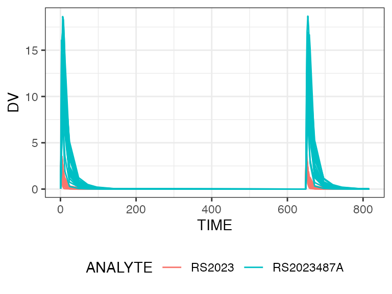
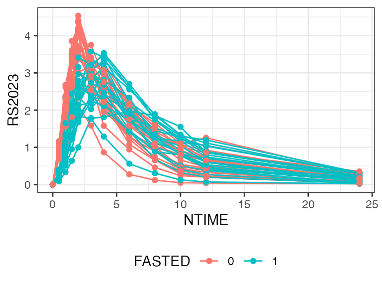

Creating NIF files from SDTM data
Rainer Strotmann
17-Sep-2023
nif-vignette.RmdThis is a basic tutorial on using the nif package to
create NONMEM Input File (NIF) data sets from Study Data Tabulation
Model- (SDTM) formatted data.
The package is intended to facilitate providing the required data table for population PK or PK/PD modeling. The source data are typically contained in different SDTM tables and will be joined together, i.e., including but not limited to: baseline demographic and vital sign data, drug exposure data, and pharmacokinetic concentrations.
In addition to re-arranging and joining the data, certain standard data imputations are automatically performed by the functions provided in this package, some of which are discussed in more detail in the vignette “Imputations and assumptions used by make_nif()”.
This tutorial contains live code that depends on the following R packages:
Import SDTM data
As a minimum, the following SDTM domains are expected to create a basic NIF file:
- DM - demographic data, mostly age, sex and other variables per subject
- VS - vital signs, particularly weight and height at enrollment, per subject
- EX - exposure information for the administered drugs, e.g., the time of administration, dose, etc.
- PC - pharmacokinetic concentrations for the analytes associated with the administered drugs
In the most common use case, the respective SDTM data files, e.g., as
*.sas7bdat files, are copied into one folder (in the below example into
path/to/sdtm/data), and can then be loaded using:
read_sdtm_sas("path/to/sdtm/data")Based on the above, the minimum required SDTM files are
dm.dat7bdat, vs.dat7bdat,
ex.dat7bdat and pc.dat7bdat. However, if
additional covariates from AE, LB or any other SDTM domain are to be
added, an explicit list of the domains can be provided to the loading
function, e.g.,
read_sdtm_sas("path/to/sdtm/data", "dm", "vs", "ex", "pc", "lb", "ae")The return value of the function is a sdtm object.
SDTM objects
sdtm objects are essentially lists of the SDTM domains
from a particular clinical study. The most common way of creating
sdtm objects is by importing the SDTM data using
read_sdtm_sas() or read_sdtm_xpt() (see
above).
The original data can be retrieved accessing the individual domains
like demonstrated below for the (fictional) sample data set
examplinib_fe:
examplinib_fe$domains[["dm"]] %>% head()
#> SITEID SUBJID ACTARM ACTARMCD RFICDTC RFSTDTC
#> 1 105 1050001 Screen Failure SCRNFAIL 2000-12-20T11:04 <NA>
#> 2 102 1020001 Screen Failure SCRNFAIL 2000-12-23T12:14 <NA>
#> 3 104 1040001 Fed - Fasted BA 2000-12-25T11:05 2001-01-06T11:05
#> 4 104 1040002 Fed - Fasted BA 2000-12-29T09:55 2001-01-05T09:55
#> 5 104 1040003 Fed - Fasted BA 2000-12-30T08:30 2001-01-10T08:30
#> 6 103 1030001 Fed - Fasted BA 2000-12-31T09:08 2001-01-06T09:08
#> STUDYID USUBJID SEX AGE AGEU COUNTRY DOMAIN ARM
#> 1 2023000400 20230004001050001 M 34 YEARS DEU DM Screen Failure
#> 2 2023000400 20230004001020001 F 36 YEARS DEU DM Screen Failure
#> 3 2023000400 20230004001040001 M 32 YEARS DEU DM
#> 4 2023000400 20230004001040002 M 41 YEARS DEU DM
#> 5 2023000400 20230004001040003 M 19 YEARS DEU DM
#> 6 2023000400 20230004001030001 F 32 YEARS DEU DM
#> ARMCD RACE ETHNIC RFENDTC
#> 1 SCRNFAIL WHITE <NA>
#> 2 SCRNFAIL WHITE <NA>
#> 3 WHITE 2001-01-19T11:05
#> 4 BLACK OR AFRICAN AMERICAN 2001-01-18T09:55
#> 5 WHITE 2001-01-23T08:30
#> 6 WHITE 2001-01-19T09:08The most relevant domains, “dm”, “vs”, “ex” and “pc”, can also be accessed directly, e.g.:
dm <- examplinib_fe$dmPrinting an sdtm object shows basic information on the
data set:
examplinib_fe
#> SDTM data set summary
#>
#> Study 2023000400 with 20 subjects providing PC data.
#> SDTM domains: dm, vs, ex, pc, lb
#>
#> Arms:
#> ACTARM ACTARMCD
#> 1 Screen Failure SCRNFAIL
#> 2 Fed - Fasted BA
#> 3 Fasted - Fed AB
#>
#> Treatments:
#> EXTRT
#> 1 EXAMPLINIB
#>
#> Specimens:
#> NULL
#>
#> Analytes:
#> PCTEST PCTESTCD
#> 1 RS2023 RS2023
#> 2 RS2023487A RS2023487A
#>
#> Treatment-to-analyte mappings:
#> EXTRT PCTESTCD
#> 1 EXAMPLINIB RS2023
#>
#> Parent-to-metabolite mappings:
#> none
#>
#> Time mappings:
#> noneSuggestions
Some fields in the original SDTM data are study specific, and is therefore hard to fully automate the generation of standard NIF files for downstream analysis steps. This needs study-specific considerations and manual adaptations.
As a starting point the function suggest() can provide
useful suggestions for a sdtmobject:
suggest(examplinib_fe)
#> 1. There are 3 arms defined in DM (see below).
#> Consider defining a PART or ARM variable in the nif dataset,
#> filtering for a particular arm, or defining a covariate based
#> on ACTARMCD.
#>
#> ACTARM ACTARMCD
#> Screen Failure SCRNFAIL
#> Fed - Fasted BA
#> Fasted - Fed AB
#> 2. There are treatments (EXTRT) without analytes of the same name
#> (see below).
#> Consider adding a treatment-analyte mapping to the sdtm object
#> See '?add_analyte_mapping' for additional information.
#>
#> EXTRT
#> EXAMPLINIB
#>
#> Available analytes:
#>
#> PCTESTCD
#> RS2023
#> RS2023487AIn the case of examplinib_fe, there are different
treatment arms defined in the DM domain that should probably be included
as covariates in the NIF file (see suggestion 1). This will be
programmed once a basic NIF file has been generated (see below).
Also, the SDTM data do not provide a relation between treatments and
analytes (see suggestion 2). The parent drug name in the SDTM field
EXTRT (i.e., “EXAMPLINIB”) is different from the respective
analyte for the parent compound as specified in the field
PCTESTCD (i.e., “RS2023”). This is a common situation in
data from clinical studies. However, to correctly associate
pharmacokinetic concentrations with the administration of the
corresponding drug, a link needs to be provided between the treament and
the analyte. Similarly, metabolites (e.g., “RS2023487A”) need to be
linked to their parent compound - particularly if muliple drugs and
metabolites are included in the data set.
Both are described below.
Analyte mappings
Often, the names for the treatments as listed in the
EXTRT field of EX do not directly correspond to the names
of the respective (parent) analytes codes used in the PC domain (i.e.,
in the PCTESTCD field).
To establish these relationships, treatment-analyte mappings must be
added to the sdtm object with
add_analyte_mapping(). In this sample case, the analyte
“RS2023” refers to the (parent) plasma concentration for the drug
“EXAMPLINIB.”
To establish the relationships betwen metabolites and their parent
copounds, add_metabolite_mapping() can be used. In the
sample data, the PCTESTCD of “RS2023487A” represents a
metabolite of “RS2023”:
sdtm_expl <- examplinib_fe %>%
add_analyte_mapping("EXAMPLINIB", "RS2023") %>%
add_metabolite_mapping("RS2023", "RS2023487A")Creating NIF files
The following section details how to create NIF files from an
sdtm object.
Basic NIF file
Most steps in the generation of a basic NIF file from an
sdtm object are automated in the make_nif()
function. The resulting nif object is essentially a data
table that has individual rows for each administration and observation.
Following the NONMEM convention for oral administration, the
EVID field is “1” for the former, and “0” for the
latter.
Standard demographic information including SEX, AGE, RACE is taken from the DM domain and merged into the data table. Baseline WEIGHT and HEIGHT are taken from the VS domain.
nif_expl <- make_nif(sdtm_expl)
#> No specimen specified. Set to PLASMA as the most likely.
#> Data cut-off was set to last observation time, 2001-03-12 10:13:00The output of the above code informs that there may be
pharmacokinetic data for multiple specimens in the PC domain, e.g.,
“PLASMA” and “URINE” or “FECES”. As no specimem was defined,
make_nif() takes the most likely (“PLASMA”). Alternatively,
the specimen of interest can be explicitly provided (see
?make_nif() for details).
Also, a data cut-off was applied that reflects the date and time of the last observation. This may be most relevant in multiple-dose studies where further administrations may be recorded after the last oberservation. These administration events are excluded from the NIF file.
Study-specific covariates
In many clinical studies, participants are treated in subgroups, e.g., dose groups, formulations, co-administered drug interaction perpetrators. While dose is automatically included as a continuous covariate per the EX domain, other categorical covariates may need to be derived, e.g., from the study arm field.
The inclcuded sample study is a food effect study in which
participants received the test drug, EXAMPLINIB, fasted or fed in a
randomized sequence (see ACTARM and ACTARMCD
in the output of suggest() above). Often, relevant fields
for consideration are EPOCH and ACTARMCD:
nif_expl %>%
as.data.frame() %>%
distinct(EPOCH, ACTARMCD, ACTARM)
#> EPOCH ACTARMCD ACTARM
#> 1 OPEN LABEL TREATMENT 1 BA Fed - Fasted
#> 2 OPEN LABEL TREATMENT 2 BA Fed - Fasted
#> 3 OPEN LABEL TREATMENT 1 AB Fasted - Fed
#> 4 OPEN LABEL TREATMENT 2 AB Fasted - FedTo create a FASTED covariate for the sample data set,
first the period number is derived from the EPOCH field,
and then the current ACTARM in that treatment period is
decoded to FASTED:
nif_expl <- make_nif(sdtm_expl, silent=T) %>%
mutate(PERIOD=str_sub(EPOCH, -1, -1)) %>%
mutate(TREATMENT=str_sub(ACTARMCD, PERIOD, PERIOD)) %>%
mutate(FASTED=case_when(TREATMENT=="A" ~ 1, .default=0))Note the silent=T modifier that omits all messages from
make_nif().
The NIF file has now the additional fields PERIOD,
TREATMENT and FASTED, see the first few lines
of the the data:
nif_expl %>%
select(USUBJID, PERIOD, TREATMENT, FASTED, TIME, EVID, AMT, ANALYTE, DV) %>%
arrange(USUBJID, PERIOD, TREATMENT, FASTED, TIME, EVID, ANALYTE) %>%
as.data.frame() %>%
head() %>%
kable()| USUBJID | PERIOD | TREATMENT | FASTED | TIME | EVID | AMT | ANALYTE | DV |
|---|---|---|---|---|---|---|---|---|
| 20230004001010001 | 1 | B | 0 | 0.0 | 0 | 0 | RS2023 | 0.0000000 |
| 20230004001010001 | 1 | B | 0 | 0.0 | 0 | 0 | RS2023487A | 0.0000000 |
| 20230004001010001 | 1 | B | 0 | 0.0 | 1 | 500 | RS2023 | NA |
| 20230004001010001 | 1 | B | 0 | 0.5 | 0 | 0 | RS2023 | 0.9025036 |
| 20230004001010001 | 1 | B | 0 | 0.5 | 0 | 0 | RS2023487A | 0.3859740 |
| 20230004001010001 | 1 | B | 0 | 1.0 | 0 | 0 | RS2023 | 1.6201458 |
Graphical exploration
NIF objects allow basic ploting functionality using
plot(), directly applied to the object. The below shows
some examples for common exploratory tasks (for more detail, refer to
?plot.nif()).
Obviously, more complex custom plots (or other analyses) can be done
manually on the nif data. Note that the nif
object must be converted to a data frame for this purpose (i.e., using
as.data.frame()):
In the simplest exploratory plot, all analytes are shown:
plot(nif_expl)
Modifiers to the plot() function allow common
adjustments. To show, e.g., the food effect on the parent compound,
“RS2023” in individual subjects, limiting the time axis to 24 h and
showing the nominal time instead of the actual time:
plot(nif_expl, analyte="RS2023", group="FASTED", max_x=24, mean=F, points=T, nominal_time=T)
The following shows the mean plasma concentration profiles over 24 h by food status:
plot(nif_expl, analyte="RS2023", group="FASTED", max_x=24, mean=T)
There are further display options, refer to ?plot.nif()
for details.
For a quick overview, use nif_viewer() to show
individual subjects interactively:
nif_viewer(nif_expl)